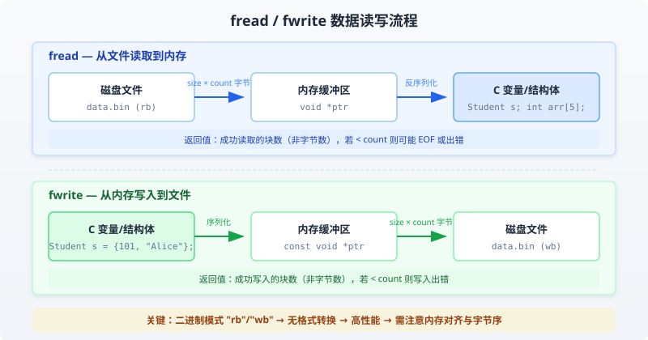

C 文件读写
上一章我们讲解了 C 语言处理的标准输入和输出设备。本章我们将介绍 C 程序员如何创建、打开、关闭文本文件或二进制文件。
一个文件，无论它是文本文件还是二进制文件，都是代表了一系列的字节。C 语言不仅提供了访问顶层的函数，也提供了底层（OS）调用来处理存储设备上的文件。本章将讲解文件管理的重要调用。
打开文件
您可以使用fopen( )函数来创建一个新的文件或者打开一个已有的文件，这个调用会初始化类型FILE的一个对象，类型FILE包含了所有用来控制流的必要的信息。下面是这个函数调用的原型：
FILE *fopen( const char *filename, const char *mode );
在这里，filename是字符串，用来命名文件，访问模式mode的值可以是下列值中的一个：
| 模式 | 描述 |
|---|---|
| r | 打开一个已有的文本文件，允许读取文件。 |
| w | 打开一个文本文件，允许写入文件。如果文件不存在，则会创建一个新文件。在这里，您的程序会从文件的开头写入内容。如果文件存在，文件内容会被清空（即文件长度被截断为0）。 |
| a | 打开一个文本文件，以追加模式写入文件。如果文件不存在，则会创建一个新文件。在这里，您的程序会在已有的文件内容中追加内容。 |
| r+ | 打开一个文本文件，允许读写文件。 |
| w+ | 打开一个文本文件，允许读写文件。如果文件已存在，则文件会被截断为零长度，如果文件不存在，则会创建一个新文件。 |
| a+ | 打开一个文本文件，允许读写文件。如果文件不存在，则会创建一个新文件。读取会从文件的开头开始，写入则只能是追加模式。 |
如果处理的是二进制文件，则需使用下面的访问模式来取代上面的访问模式：
"rb", "wb", "ab", "rb+", "r+b", "wb+", "w+b", "ab+", "a+b"
关闭文件
为了关闭文件，请使用 fclose( ) 函数。函数的原型如下：
int fclose( FILE *fp );
如果成功关闭文件，fclose( )函数返回零，如果关闭文件时发生错误，函数返回EOF。这个函数实际上，会清空缓冲区中的数据，关闭文件，并释放用于该文件的所有内存。EOF 是一个定义在头文件stdio.h中的常量。
C 标准库提供了各种函数来按字符或者以固定长度字符串的形式读写文件。
写入文件
下面是把字符写入到流中的最简单的函数：
int fputc( int c, FILE *fp );
函数fputc()把参数 c 的字符值写入到 fp 所指向的输出流中。如果写入成功，它会返回写入的字符，如果发生错误，则会返回EOF。您可以使用下面的函数来把一个以 null 结尾的字符串写入到流中：
int fputs( const char *s, FILE *fp );
函数fputs()把字符串s写入到 fp 所指向的输出流中。如果写入成功，它会返回一个非负值，如果发生错误，则会返回EOF。您也可以使用int fprintf(FILE *fp,const char *format, ...)函数把一个字符串写入到文件中。尝试下面的实例：
注意：请确保您有可用的tmp目录，如果不存在该目录，则需要在您的计算机上先创建该目录。
/tmp一般是 Linux 系统上的临时目录，如果你在 Windows 系统上运行，则需要修改为本地环境中已存在的目录，例如: C:\tmp、D:\tmp等。
实例
当上面的代码被编译和执行时，它会在 /tmp 目录中创建一个新的文件test.txt，并使用两个不同的函数写入两行。接下来让我们来读取这个文件。
读取文件
下面是从文件读取单个字符的最简单的函数：
int fgetc( FILE * fp );
fgetc()函数从 fp 所指向的输入文件中读取一个字符。返回值是读取的字符，如果发生错误则返回EOF。下面的函数允许您从流中读取一个字符串：
char *fgets( char *buf, int n, FILE *fp );
函数fgets()从 fp 所指向的输入流中读取 n - 1 个字符。它会把读取的字符串复制到缓冲区buf，并在最后追加一个null字符来终止字符串。
如果这个函数在读取最后一个字符之前就遇到一个换行符 '\n' 或文件的末尾 EOF，则只会返回读取到的字符，包括换行符。您也可以使用int fscanf(FILE *fp, const char *format, ...)函数来从文件中读取字符串，但是在遇到第一个空格和换行符时，它会停止读取。
实例
当上面的代码被编译和执行时，它会读取上一部分创建的文件，产生下列结果：
1: This 2: is testing for fprintf... 3: This is testing for fputs...
首先，fscanf()方法只读取了This，因为它在后边遇到了一个空格。其次，调用fgets()读取剩余的部分，直到行尾。最后，调用fgets()完整地读取第二行。
二进制 I/O 函数
下面两个函数用于二进制输入和输出：
size_t fread(void *ptr, size_t size, size_t count, FILE *stream); size_t fwrite(const void *ptr, size_t size, size_t count, FILE *stream);
fread 和 fwrite是 C 语言标准库中用于二进制文件块读写的核心函数，它们直接操作内存数据块，避免了文本格式转换的开销，特别适合处理大文件和结构化数据的批量读写。
参数说明
四个参数在两个函数中含义一致，但数据流向相反：
| 参数 | 类型 | 说明 | fread 行为 | fwrite 行为 |
|---|---|---|---|---|
| ptr | void* / const void* | 内存缓冲区指针 | 读取目标地址（写入内存） | 数据源地址（从内存读取） |
| size | size_t | 每个数据块的字节数 | 每次读取的块大小 | 每次写入的块大小 |
| count | size_t | 要读写的数据块数量 | 期望读取的块数 | 期望写入的块数 |
| stream | FILE* | 已打开的文件指针 | 必须以 "rb" 打开 | 必须以 "wb" 打开 |
实际操作的字节数为size × count，返回值是成功读写的块数量而非字节数。若返回值小于 count，可能是文件结束（EOF）或读写错误导致，需要分别检查。
二进制模式与文本模式
使用 fread/fwrite 时必须用二进制模式打开文件，否则可能导致数据损坏。
为什么必须使用二进制模式
文本模式在 Windows 平台下会自动将换行符\n转换为\r\n，这会破坏二进制数据的完整性。
Linux/macOS 下文本模式与二进制模式行为一致，但跨平台代码应显式使用"b"标志以保证可移植性。
实例
FILE *fp_read = fopen("data.bin", "rb"); // 二进制读取
FILE *fp_write = fopen("data.bin", "wb"); // 二进制写入
// 错误写法：文本模式（Windows 下数据可能被篡改）
FILE *fp_bad = fopen("data.bin", "r"); // 缺少 "b" 标志
与文本函数的对比
选择哪种函数取决于数据类型和需求场景：
| 特性 | fread / fwrite | fprintf / fscanf |
|---|---|---|
| 数据处理方式 | 原样读写内存二进制数据 | 按格式转换（数字 ↔ 字符串） |
| 适用场景 | 结构体、数组、图像、音频等 | 配置文件、日志、报告等人类可读文本 |
| 性能 | 快，无转换开销 | 慢，需解析格式字符串 |
| 精度 | 无精度损失 | 浮点数可能损失精度 |
| 人类可读 | 否（二进制格式） | 是（纯文本格式） |
数据读写流程图
下图展示了 fread 和 fwrite 在文件与内存之间的数据流向：

典型使用场景
读写结构体数据
这是 fread/fwrite 最常见的应用场景，可以将整个结构体作为一个数据块一次性读写。
实例
#include <stdlib.h>
// 定义学生结构体
// 注意：必须使用固定长度数组，不能用 char *name 指针成员
typedef struct {
int id; // 学号
char name[50]; // 姓名（固定数组，不可用指针）
float score; // 成绩
} Student;
int main() {
// ===== 写入结构体到文件 =====
Student s = {101, "Alice", 95.5f}; // 初始化数据
FILE *fp = fopen("student.bin", "wb");
if (fp == NULL) {
perror("文件打开失败");
return 1;
}
// 将整个结构体作为一块数据写入
size_t written = fwrite(&s, sizeof(Student), 1, fp);
if (written != 1) {
printf("写入失败\n");
}
fclose(fp);
// ===== 从文件读取结构体 =====
fp = fopen("student.bin", "rb");
if (fp == NULL) {
perror("文件打开失败");
return 1;
}
Student loaded; // 未初始化，将由 fread 填充
size_t read_count = fread(&loaded, sizeof(Student), 1, fp);
if (read_count != 1) {
printf("读取失败或文件结束\n");
fclose(fp);
return 1;
}
printf("学号: %d, 姓名: %s, 成绩: %.1f\n", loaded.id, loaded.name, loaded.score);
fclose(fp);
return 0;
}
学号: 101, 姓名: Alice, 成绩: 95.5
结构体中不能包含指针成员（如char *name），因为 fwrite 只保存指针的地址值而非指向的字符串内容。读回时该地址已无效，导致悬空指针。正确做法是使用固定长度数组，如char name[50]。
读写数组数据
数组在内存中连续存放，可以一次性读写整个数组。
实例
int main() {
// 原始数据数组
int data[] = {1, 2, 3, 4, 5};
int count = 5; // 数组元素个数
// ===== 写入数组到文件 =====
FILE *fp = fopen("array.bin", "wb");
if (fp == NULL) {
perror("文件打开失败");
return 1;
}
// data 等价于 &data[0]，指向数组首地址
fwrite(data, sizeof(int), count, fp);
fclose(fp);
printf("已写入 %d 个整数到 array.bin\n", count);
// ===== 从文件读取数组 =====
int buffer[5] = {0}; // 初始化为 0，便于验证读取结果
fp = fopen("array.bin", "rb");
if (fp == NULL) {
perror("文件打开失败");
return 1;
}
size_t read_count = fread(buffer, sizeof(int), count, fp);
if (read_count < count) {
printf("读取不完整：预期 %d 个，实际 %zu 个\n", count, read_count);
}
fclose(fp);
// 打印读取结果
printf("读取到的数据: ");
for (int i = 0; i < count; i++) {
printf("%d ", buffer[i]);
}
printf("\n");
return 0;
}
已写入 5 个整数到 array.bin 读取到的数据: 1 2 3 4 5
批量读写大文件
对于大文件，应使用循环分块读写，避免一次性加载全部内容到内存。
实例
#include <stdlib.h>
#define BUFFER_SIZE 1024 // 每次读写 1KB，可根据需要调整
// 高效文件复制函数
// 返回值：0 表示成功，-1 表示失败
int copy_file(const char *src, const char *dst) {
char buffer[BUFFER_SIZE]; // 中转缓冲区
FILE *in = fopen(src, "rb");
FILE *out = fopen(dst, "wb");
// 检查两个文件是否都成功打开
if (!in) {
perror("源文件打开失败");
return -1;
}
if (!out) {
perror("目标文件打开失败");
fclose(in); // 关闭已打开的源文件
return -1;
}
// 循环读取，每次最多 BUFFER_SIZE 字节
size_t n;
while ((n = fread(buffer, 1, BUFFER_SIZE, in)) > 0) {
// fwrite 的 size=1, count=n，确保写入实际读取的字节数
if (fwrite(buffer, 1, n, out) != n) {
perror("写入失败");
fclose(in);
fclose(out);
return -1;
}
}
// 检查读取是否因错误而终止（而非正常的 EOF）
if (ferror(in)) {
perror("读取错误");
fclose(in);
fclose(out);
return -1;
}
fclose(in);
fclose(out);
printf("文件复制成功: %s -> %s\n", src, dst);
return 0;
}
int main() {
// 使用示例：复制 runoob 测试文件
copy_file("runoob_input.bin", "runoob_output.bin");
return 0;
}
文件复制成功: runoob_input.bin -> runoob_output.bin
这个模式的关键在于fread返回实际读取的字节数，然后用fwrite只写入实际读取的字节数，避免了末尾多余数据的写入。
关键注意事项
返回值检查
调用 fread/fwrite 后必须检查返回值，区分正常结束与异常情况。
实例
int main() {
int buffer[100];
FILE *fp = fopen("data.bin", "rb");
if (fp == NULL) {
perror("文件打开失败");
return 1;
}
// 尝试读取 100 个整数
size_t count = fread(buffer, sizeof(int), 100, fp);
if (count < 100) {
// 区分 EOF 和错误
if (feof(fp)) {
printf("已到达文件末尾，实际读取 %zu 个元素\n", count);
// 此时可以继续处理已读取的数据
} else if (ferror(fp)) {
perror("读取过程中发生错误");
fclose(fp);
return 1;
}
} else {
printf("成功读取全部 %zu 个元素\n", count);
}
fclose(fp);
return 0;
}
已到达文件末尾，实际读取 47 个元素
结构体读写陷阱
结构体在内存中的布局受编译器对齐策略影响，可能导致跨平台兼容性问题。
内存对齐不一致
不同编译器或不同编译选项下，同一个结构体可能产生不同的内存布局。
实例
// 问题示例：默认对齐下，char 后会有 3 字节填充
typedef struct {
char c; // 占 1 字节，但后面会有填充
int i; // 4 字节对齐，实际从偏移 4 开始
} Mixed;
// 解决方法一：使用 pragma pack 强制紧凑对齐
#pragma pack(push, 1) // 保存当前对齐设置，设为 1 字节对齐
typedef struct {
char c; // 偏移 0，占 1 字节
int i; // 偏移 1，占 4 字节（无填充）
} PackedMixed;
#pragma pack(pop) // 恢复之前的对齐设置
// 解决方法二：手动逐个序列化成员（最安全的方式）
// 这种方法不依赖编译器对齐，跨平台兼容性最好
int main() {
// 打印两种结构体的大小差异
printf("默认对齐 Mixed 大小: %zu 字节\n", sizeof(Mixed)); // 通常为 8
printf("紧凑对齐 PackedMixed 大小: %zu 字节\n", sizeof(PackedMixed)); // 为 5
return 0;
}
默认对齐 Mixed 大小: 8 字节 紧凑对齐 PackedMixed 大小: 5 字节
推荐做法：跨平台或长期存储时，优先使用手动序列化（逐个成员读写），而非直接将结构体写入文件。这样可以完全避免对齐和字节序问题。
禁止指针成员
这是初学者最容易犯的错误之一。
实例
#include <string.h>
#include <stdlib.h>
// 错误示例：结构体包含指针成员
typedef struct {
int id;
char *name; // 危险！fwrite 只保存指针值（地址），不保存字符串内容
} BadStudent;
// 正确示例：使用固定数组
typedef struct {
int id;
char name[100]; // 实际数据保存在结构体内，可以安全读写
} GoodStudent;
int main() {
// 演示错误做法的后果
BadStudent bs;
bs.id = 1;
bs.name = malloc(50);
strcpy(bs.name, "RUNOOB");
// 写入 BadStudent：此时 name 指针的地址被写入，字符串内容并未写入
FILE *fp = fopen("bad.bin", "wb");
fwrite(&bs, sizeof(BadStudent), 1, fp);
fclose(fp);
// 读回 BadStudent：name 指针值是之前 malloc 在另一个进程的地址，完全无效
BadStudent loaded;
fp = fopen("bad.bin", "rb");
fread(&loaded, sizeof(BadStudent), 1, fp);
fclose(fp);
// loaded.name 是悬空指针，访问会导致未定义行为！
free(bs.name);
printf("演示完成，但 load 出来的 name 指针是无效的\n");
return 0;
}
演示完成，但 load 出来的 name 指针是无效的
缓冲区刷新
C 标准库的 I/O 是带缓冲的，关键数据需要显式刷新以保证持久化。
实例
int main() {
FILE *fp = fopen("critical.bin", "wb");
if (fp == NULL) {
perror("文件打开失败");
return 1;
}
int data[] = {1, 2, 3, 4, 5};
fwrite(data, sizeof(int), 5, fp);
// 方法一：显式刷新缓冲区，数据立即写入磁盘
fflush(fp);
printf("使用 fflush 强制刷新到磁盘\n");
// 方法二：关闭文件时自动刷新（推荐）
// fclose 内部会自动调用 fflush
fclose(fp);
printf("fclose 也会自动刷新缓冲区\n");
return 0;
}
使用 fflush 强制刷新到磁盘 fclose 也会自动刷新缓冲区
文件指针定位
结合 fseek 和 ftell 可以实现文件的随机访问，按需读取指定位置的数据。
实例
typedef struct {
int id;
char name[50];
float score;
} Student;
int main() {
FILE *fp = fopen("students.bin", "rb");
if (fp == NULL) {
perror("文件打开失败");
return 1;
}
// 跳到文件末尾，获取文件大小
fseek(fp, 0, SEEK_END);
long file_size = ftell(fp);
printf("文件大小: %ld 字节\n", file_size);
// 计算文件中有多少个结构体记录
long record_count = file_size / sizeof(Student);
printf("包含 %ld 条学生记录\n", record_count);
// 跳到第 6 个结构体（索引从 0 开始，偏移量 = 5 * sizeof(Student)）
fseek(fp, sizeof(Student) * 5, SEEK_SET);
Student s;
fread(&s, sizeof(Student), 1, fp);
printf("第 6 条记录: id=%d, name=%s\n", s.id, s.name);
fclose(fp);
return 0;
}
文件大小: 6000 字节 包含 100 条学生记录 第 6 条记录: id=106, name=RUNOOB
常见错误总结
下表汇总了使用 fread/fwrite 时最常遇到的问题及正确做法：
| 错误类型 | 错误表现 | 正确做法 |
|---|---|---|
| 未检查文件指针 | fopen 失败后直接调用 fread，导致崩溃 | 始终检查fp != NULL |
| 忽略二进制模式 | Windows 下二进制数据被换行符转换破坏 | 使用"rb" / "wb" |
| 混淆块数和字节数 | 将返回值当作字节数处理，导致逻辑错误 | 记住返回值是块数，字节数 =返回值 × size |
| 缓冲区溢出 | 分配空间不足，越界写入 | 确保缓冲区空间 ≥size × count |
| 结构体含指针 | 读回后指针地址无效，导致悬空指针 | 使用固定数组或手动序列化每个成员 |
| 忽略错误检查 | 未区分 EOF 和读取错误，数据不完整 | 检查返回值，用feof() / ferror()判断原因 |
| 数据未同步 | 程序崩溃导致缓冲区数据丢失 | 关键数据写入后调用fflush(fp) |
GGLLCC
122***26@qq.com
fseek 可以移动文件指针到指定位置读,或插入写:
fseek 设置当前读写点到 offset 处, whence 可以是 SEEK_SET,SEEK_CUR,SEEK_END 这些值决定是从文件头、当前点和文件尾计算偏移量 offset。
你可以定义一个文件指针 FILE *fp,当你打开一个文件时，文件指针指向开头，你要指到多少个字节，只要控制偏移量就好，例如, 相对当前位置往后移动一个字节：fseek(fp,1,SEEK_CUR);中间的值就是偏移量。 如果你要往前移动一个字节，直接改为负值就可以：fseek(fp,-1,SEEK_CUR)。
执行以下实例前，确保当前目录下test.txt文件已创建：
#include <stdio.h> int main(){ FILE *fp = NULL; fp = fopen("test.txt", "r+"); // 确保 test.txt 文件已创建 fprintf(fp, "This is testing for fprintf...\n"); fseek(fp, 10, SEEK_SET); if (fputc(65,fp) == EOF) { printf("fputc fail"); } fclose(fp); }执行结束后，打开 test.txt 文件：
注意：只有用r+模式打开文件才能插入内容，w 或 w+模式都会清空掉原来文件的内容再来写，a 或 a+模式即总会在文件最尾添加内容，哪怕用 fseek() 移动了文件指针位置。
GGLLCC
122***26@qq.com
Kazin
785***462@qq.com
在 Visual Studio 2015 开发环境中运行下列代码, 会提示 fopen 函数不安全:
#include <stdio.h> int main() { // 申明文件指针 FILE *filePointer = NULL; // 以追加模式打开文件 test.txt, 其中路径参数用正斜杠("/") filePointer = fopen("C:/Users/Administrator/Desktop/test.txt", "a+"); // 在test.txt文件末尾追加写入 fputs("The text was added to the file by executing these codes.", filepointer); // 关闭文件 fclose(filepointer); return 0; }错误提示:
错误 C4996 'fopen': This function or variable may be unsafe. Consider using fopen_s instead. To disable deprecation, use _CRT_SECURE_NO_WARNINGS. See online help for details.
解决办法，在代码首行写上:
定义宏忽略警告, 即可忽略安全警告, 生成运行。
Kazin
785***462@qq.com
Rudens
542***174@qq.com
fopen_s 和 fopen 的区别在于：
fopen_s 有三个参数，第一个参数是二级指针，用于存放文件流指针地址，其他的同 fopen 一致。
也就是说，用 fopen 需要这么写：
FILE* fp=NULL; fp=fopen("\\123.txt","w+");而如果用 fopen_s：
就可以了。
Rudens
542***174@qq.com
扫地僧
dar***l.van.sunny@qq.com
对于第一个例子，若是在 Windows 平台上，需要改写成如下代码：
#include <stdio.h> int main() { FILE *fp = NULL; fp = fopen("C:\\myc\\src\\temp\\test.txt", "w+"); fprintf(fp, "This is testing for fprintf...\n"); fputs("This is testing for fputs...\n", fp); fclose(fp); }经调试通过。
扫地僧
dar***l.van.sunny@qq.com
枫渔
806***774@qq.com
对 fopen()函数补充说明几点：
枫渔
806***774@qq.com